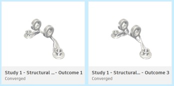
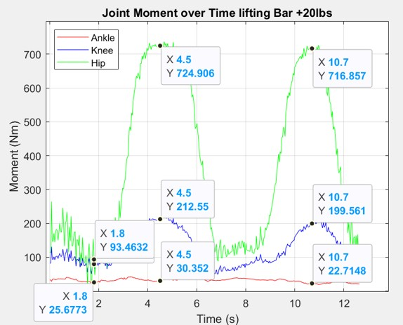
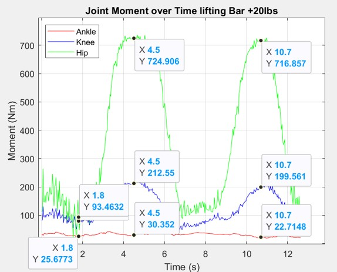
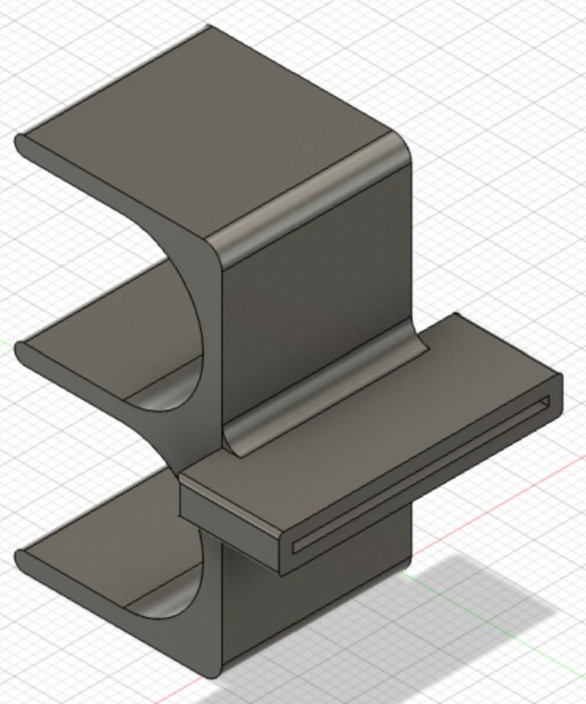

Projects Portfolio
EEG Controlled Bipedal Robot
9/2024 – Present
Project Goal:
Integrating EEG signals with a deep learning model for movement classification and precise motor control
Key Achievements:
- Optimized robot structure with CAD design through SolidWorks for enhanced stability and mobility
- 3D printed components for prototyping
- PCB design for the overcurrent protection circuit, ensuring reliable power management


Exoskeleton Validation with Simulation
5/2025 – Present
Project Goal:
Validated exoskeleton assistance efficacy by analyzing biomechanical load reduction
Key Achievements:
- Processed marker-based motion data from lifting activities to quantify joint kinematics and dynamics
- Simulated the assistance of exoskeleton and analyzed muscle activation reduction
- Researched and troubleshooted solutions to optimize exoskeleton for ergonomic performance

Adaptive Swing Footrest for Wheelchair
1/2025 – 4/2025
Project Goal:
Design a footrest mechanism that supports natural leg motion while ensuring stability and user comfort
Key Achievements:
- Designed the footrest mechanism using SolidWorks and fabricated components through 3D printing
- Conducted iterative testing and Failure Modes and Effects Analysis
- Integrated material selection and cost analysis to enhance durability, recyclability, and affordability

Generative Design Optimization of Bracket
4/2025
Project Goal:
Redesign a Ti-6Al-4V aircraft bracket for additive manufacturing to reduce weight and material waste
Key Achievements:
- Conducted generative design and stress analysis in Fusion 360 under defined load cases
- Selected optimal design based on factor of safety and von Mises stress vs. mass
- Improved printability and reduced waste by optimizing for 3D printing and high-volume production

EMG Processing & Circuit Simulation
1/2025
Project Goal:
Acquiring and processing EMG signals for real-time device control using MATLAB and Arduino
Key Achievements:
- Acquired and processed EMG signals using MATLAB and Arduino for muscle activation control
- Demonstrated real-time EMG-based device control of LEDs and servo motors
- Designed and simulated an EMG processing circuit in LTSpice, optimizing signal clarity with amplifiers and filters

Deep Learning SEM Image Segmentation
4/2024 – 8/2024
Project Goal:
Automate the segmentation of types of lacunae in trabecular bone SEM images
Key Achievements:
- Trained and optimized U-Net model in Dragonfly
- Evaluated model performance in MATLAB, achieving 98% accuracy and 71% Dice coefficient
- Presented findings to academic peers through meetings and poster sessions


3D Resin Printing of Trabecular Bone Structures
4/2024 – 8/2024
Project Goal:
Develop a reliable method to resin 3D print trabecular bone structures for future mechanical testing
Key Achievements:
- Processed microCT data and created printable STL models using SolidWorks and AnyCubic software
- Optimized resin print parameters to improve structural fidelity across bone types
- Demonstrated high geometric fidelity through image registration and voxel-wise analysis


Automation of Cell Aspiration
1/2024 – 4/2024
Project Goal:
Develop a high precision negative pressure control device for accurate cell aspiration
Key Achievements:
- Designed sensing circuit using instrumentation amplifier and pressure sensor for accurate pressure readings
- Verified and validated prototype through comprehensive mechanical, electrical, and code assessments
- Assessed risk, failure modes, and conducted requirements testing to ensure system reliability
Motion Monitoring with IMU
1/2024 – 4/2024
Project Goal:
Analyze cycling motion consistency at different speeds and quantify performance
Key Achievements:
- Analyzed cycling motion consistency at various speeds using MATLAB
- Quantified performance by filtering and standardizing data to calculate root mean square error
- Collected body segment locomotion data with Inertial Measurement Units (IMUs) on smartphones
Deadlift Augmentation Device
9/2023 – 12/2023
Project Goal:
Conduct a comprehensive joint moment analysis of deadlifts to improve posture and prevent injury
Key Achievements:
- Directed joint moment analysis in MATLAB, using marker-less motion capture via OpenPose
- Identified the hip joint as bearing the highest load, with a peak moment of 730 Nm when lifting 65lb
- Engineered a wearable sensor vest for posture improvement and injury prevention data collection
 

Impact Detecting Device
1/2023
Project Goal:
Design a sensor-based system to detect and understand whiplash injuries through head and neck kinetic impact data
Key Achievements:
- Conducted in-depth research on biomechanics to inform system development
- Designed sensor-based methods to collect head and neck kinetic impact data for injury analysis
- Collaborated on the overall device design to detect and understand whiplash

Assistive Grip Device
11/2022
Project Goal:
Evaluate and select the optimal bike lane route in Vancouver based on multiple criteria to meet stakeholder needs
Key Achievements:
- Collaborated with a team to evaluate and select the best bike lane routes using data analysis and stakeholder engagement
- Determined the optimal route by balancing the needs of the stakeholders, ensuring robust decision-making

Bike Lane Route
10/2022
Project Goal:
Evaluate and select the optimal bike lane route in Vancouver based on multiple criteria to meet stakeholder needs
Key Achievements:
- Collaborated with a team to evaluate and select the best bike lane routes using data analysis and stakeholder engagement
- Determined the optimal route by balancing the needs of the stakeholders, ensuring robust decision-making

Cardboard Chair Design
9/2022
Project Goal:
Design a functional, minimalistic, and compact cardboard chair based on stakeholder needs
Key Achievements:
- Collaborated on the design of the cardboard chair, incorporating feedback and ideas from stakeholders
- Analyzed stakeholder needs to generate prototype solutions that met design and usability criteria
- Utilized prototyping techniques to create a physical model for evaluation and refinement